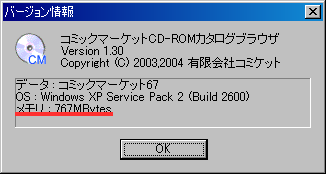

「印刷データのBMPファイル出力」ダイアログの「高解像度BMP出力」チェックボックスをチェックすると、高解像度マップ画像を用いて出力を行います。
高解像度BMPファイル出力では、データの生成に非常に多くのメモリを必要とします。
そのため、この機能をONにするには、PCに搭載されているメモリが256メガバイト以上である必要があります（512メガバイト以上を推奨）。
「コミケットDVD-ROMカタログブラウザ」が認識している搭載メモリ量を確認するには、メインメニューの「ヘルプ」→「バージョン情報」で表示されるダイアログの内容を確認してください。

「メモリ」の表示が「256Mbytes」以上の場合、この機能を使用することができます。
なお、256メガバイト以上あればこの機能を使用することはできますが、実用上、512メガバイト以上のメモリを搭載していることを推奨します。
このウィンドウを閉じるには、ウィンドウ右上のクローズボタンをクリックしてください。